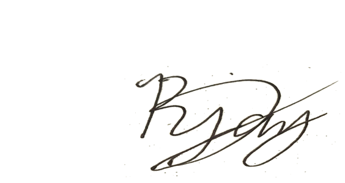

R JAY M. JESALVA
Computer System
Contact Info
rjayjesalva016@gmail.com
+63 9763744074
Febuary 21, 2023
[employer's name]
[company name]
[company Address]
[city state zip code]
Dear [employer],
I am writing to express my enthusiasm and interest in joining [Company Name] for
my work immersion. As a graduating Grade 12 Information and Communication
Technology (ICT) student, I am eager to gain practical experience in a professional
setting to complement my academic knowledge and prepare for the challenges of
the workforce.
While I may not have formal work experience, I have acquired a solid foundation in
ICT through my academic pursuits. My coursework has equipped me with a diverse
skill set, including proficiency in programming languages such as Java and Python,
database management, and web development. I am confident that the knowledge
and skills I have gained during my academic journey will contribute positively to
[Company Name].
I am particularly drawn to [Company Name] because of its reputation for innovation
and commitment to excellence in the field of Computer System Programming. Your
company's dedication to staying at the forefront of technological advancements
aligns with my passion for continuous learning and staying updated on emerging
trends in ICT.
Thank you for considering my application. I am looking forward to the opportunity to
discuss how my skills and enthusiasm align with the goals of [Company Name]. I am
available for an interview at your earliest convenience and can be reached at my
contact number 09611520415 or email me at rjayjesalva016@gmail.com.
Best Regards,

R JAY M. JESALVA